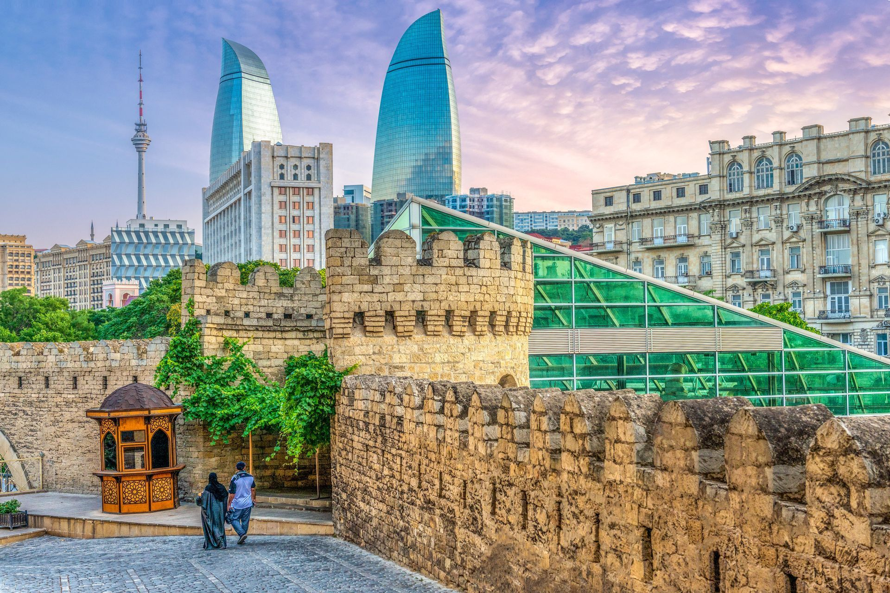

Азербайжан, самое лучшее
Культурные программы - Азербайжан
1 495 EUR
Азербайджан – прекрасная страна, и нам очень хочется рассказать вам об этом молодом, но так быстро развивающемся государстве. Мы покажем все самое интересное, что ждет вас здесь — его уникальную природу, неповторимую культуру, многовековую историю; познакомим вас с дружелюбными и гостеприимными местными жителями, расскажем об обычаях и традициях, культуре и вкуснейшей национальной кухне.
Мы хотим, чтобы ваш отпуск здесь стал самым лучшим и незабываемым событием в жизни!
Добро пожаловать в Баку!
Полётные данные!
1 TK1424 Y SA 27SEP TLLIST HS1 X 1935 2315
2 TK 338 Y SU 28SEP ISTGYD HS1 0120 0515
3 TK 333 Y SA 04OCT GYDIST HS1 X 1140 1355
4 TK1423 Y SA 04OCT ISTTLL HS1 1510 1840
День 1 (28 сент)
• 05:15/TK-338. Прибытие в Баку. Встреча с сотрудниками встречающей стороны.
• Трансфер из аэропорта в центр (25-30 км). Ранний заезд в отель. Размещение в отеле и завтрак. У вас
будет время, чтобы освежиться и подготовиться к первому знакомству с удивительным Баку.
• 20:30 Вас ждет ужин в престижном ресторане с приятной атмосферой, который станет настоящим
праздником вкусов. Наслаждаясь традиционными азербайджанскими блюдами и мелодиями
национальной музыки, вы почувствуете, как восточная культура проникает в ваше сердце, оставляя
неизгладимый след. Этот вечер станет началом вашего незабываемого путешествия в мир
азербайджанской сказки.
• 22:30/23:00 Возвращение в отель.
День 2 (29 сент)
• После завтрака авто-пешеходная, познавательная экскурсия по центральной части города.
Вас ждет увлекательное погружение в историю и культуру древнего и современного Баку. Вы
проедете по главным проспектам, улицам и площадям современного города, ознакомитесь с
скульптурно-монументальными и архитектурно-историческими памятниками, полюбуетесь
панорамой города и Бакинской морской бухты со смотровой площадки Нагорного парка с
мемориальными памятниками, после чего совершите пешеходную экскурсионную прогулку по
средневековой части города.
• «Ичяри Шехер» / Старый город.
Крепостные стены, башни и главные городские ворота средневекового Баку встретит вас своеобраз
ной архитектурой жилых домов, узкими улочками, вымощенными камнем и древними постройками,
каждая из которых рассказывает свою уникальную историю, площадью археологических раскопок
«Археопарк», мастерскими и лавками ремесленников, сувенирными и антикварными магазинами.
- Вы увидите одного из символов Баку, знаменитую Девичью Башню, возвышающуюся над городом
и хранящую в себе вековые тайны. Башенный Храм «Девичья Башня/Башня Дева» (VII-XII вв.) –
архитектурная икона, овеянная многочисленными легендами, является величественным и самым
таинственным 8-и ярусным памятником Баку. Памятник, вокруг даты постройки и назначения,
которого идут многочисленные споры.
- Вы увидите мемориально-культовый комплекс, оригинальная архитектурная композиция «Дворец
Ширваншахов» (XV в). Дворцовый ансамбль – крупнейший памятник ширвано-апшеронской ветви
азербайджанского зодчества. Ансамбль не строился по единому архитектурному замыслу и состоит
из ряда сооружений, расположенных согласно рельефу на трёх уровнях.
- Вас также ждет возможность посетить первый и единственный в мире уникальный музей миниатюр
ных книг, вошедший в Книгу рекордов Гиннеса, где собраны крошечные шедевры, поражающие
своей искусностью. Где ещё можно увидеть коллекцию книжек, в которой самая крупная не
превышает 10 см в длину и 10 см в ширину?!
- А галерея эксцентричного художника Али Шамси удивит вас своей необычностью и богатством
воображения.
Прогуливаясь по Старому городу, вы словно перенесетесь во времени, окунувшись в атмосферу
средневекового Востока. Эти улицы помнят шаги героев легендарных фильмов, таких как
«Бриллиантовая рука», «Айболит – 66», «Человек-амфибия» и «Тегеран - 43», и теперь у вас есть
шанс пройти по их следам.
• 13:30-15:00 Время обеда (дополнительно, на месте).
• После обеда возвращение в отель (или же можем высадить туристов в центре, до отеля доберутся
самостоятельно).
• 20:30 Вкусный, сытный ужин в ресторане с блюдами национальной кухни.
• 22:30/23:00 Возвращение в отель.
Желающие могут обогатить свои впечатления в пешеходной прогулке по центральной части города
или в зажигательной атмосфере бакинских ночных клубов, ресторанов и пивных баров.
День 3 (30 сент)
• После завтрака вас ждет встреча с древностью в Национальном Историко-Художественном заповеднике «Гобустан» / Музей петроглифов – горное местечко на юго-востоке Большого Кавказского хребта, расположенное в 65 км от центра (в 2007 году включён в список памятников Мирового культурного наследия «ЮНЕСКО»).
первобытных людей, оставивших после себя множество наскальных изображений – петроглифов.Эти первобытные памятники искусства отображают культуру, хозяйство, мировоззрение, обычаи и
традиции древних людей. Это место, где тысячелетия назад жили наши предки, оставившие после
себя уникальные наскальные рисунки. Здесь вы сможете увидеть изображения животных, сцен
охоты и ритуалов, которые перенесут вас в эпоху каменного века. Археологические находки и
живописные ландшафты создают ощущение, что вы путешествуете сквозь века. Окружающие вас
скалы и каменные глыбы хранят в себе дух древности, и каждый шаг здесь – это прикосновение к
истории. Когда-то море плескалось прямо у подножия этих гор, но потом отступило, оставив на
отполированных купольных скалах характерные рельефные следы.
Oбширная путевая информация с обзором и посещением экскурсионных объектов:
- осмотр мемориальной мечети «Хёкюмя-Ханум»;
- информация о проявлениях грязевого вулканизма в окрестностях Баку;
- информация о зарождении изобразительного искусства у первобытных человеческих общин.
• Посещение историко-художественного музея у горного массива, оснащенного инновационной
техникой, с предоставлением сенсорных экранов со специальными мультимедийными программами,
которые позволяют каждому посетителю насладиться виртуальным путешествием в далекое
прошлое. Музей состоит из 12 экспозиционных залов и оснащен современными устройствами. В
новой экспозиции присутствуют различные цифровые технологии – образовательные и
развлекательные игры, интерактивные стенды, проекционные системы, трехмерные инсталляции,
восковые фигуры и видео и пр. В зале "Природная среда Гобустана" туристы оказываются в
техногенно-иллюстрированной среде, соответствующей реальному ландшафту. На сенсорном экране
можно наблюдать анимационное представление, отражающее изменения Каспийского моря в
течение тысячелетий, получить сведения о природе, флоре Гобустана, проследить этапы развития
человечества – от каменного века до современности. В тематических залах экспозиции в
формате 3D туристы ознакомятся с понятиями первобытных людей о красоте с их художественным
воображением, смогут отследить эволюцию наскального искусства в ранний период человечества.
• Осмотр наскальных изображений периода мезолита и неолита, рисунки и пиктограммы, древние
пещеры-гроты, экзотические скальные обрывы и эндемичная растительность, древне латинская
надпись на скалах (свидетельствует о пребывании римских войск близ Баку в I веке) в центральной
части заповедника. На территории заповедника общей площадью 537 гектаров сосредоточена одна
из самых больших в мире коллекций древних наскальных рисунков – здесь насчитывается около
6 тысяч петроглифов, 20 пещер и 40 курганов. Среди множества рисунков привлекают внимание
изображения лодок с гребцами, что указывает на то, что древние поселенцы были хорошими
мореходами. Эти изображения заинтересовали известного ученого и путешественника Тура
Хейердала, который несколько раз побывал в Азербайджане.
Почувствуете себя настоящими археологами – вдруг именно вам удастся расшифровать послание
древних художников?!
• Посещение уникальных природных явлений – активные грязевые вулканы. Вы словно переместитесь
на другую планету. Эти вулканы, постоянно извергающие грязь и газы, создают незабываемые
прекрасные пейзажи, похожие на марсианские. Иссушенная почва образует под ногами причудливый
орнамент. Постоянное грязевое бульканье создает ощущение неземной поверхности. Обычно они
шипят и издают булькающие звуки. Зрелище действительно завораживает!
Некоторым из этих вулканов удается гореть постоянно, и это зрелище связано с зарождением
зороастризма – одной из древнейших религий.
Вы сможете посетить и близко подняться на сам кратер грязевых вулканов, понаблюдать за
бульканьем жидкой глины и сделать впечатляющие снимки газовых пузырей.
Геологи НАСА, изучившие природу Марса, сделали вывод о том, что грязевые вулканы
Азербайджана схожи по своему строению с возвышенностями красной планеты. 15 сентября 2004
года крупнейший грязевой вулкан в мире, расположенный на территории Азербайджана, вошёл в
Книгу рекордов Гиннеса.
Вулканы и их грязевые массы используются в науке и промышленности. Так, с их помощью ученые
могут отслеживать процессы, происходящие под слоем земной коры. А жидкости, которые
извергаются из кратеров отдельных вулканов, используются в строительной и химической
промышленности, а также в косметологии. Кроме того, вулканическая грязь благотворно влияет на
здоровье: после плавательных сеансов в прохладных природных ваннах облегчаются симптомы
заболеваний опорно-двигательного аппарата и сердечно-сосудистой системы.
Грязевые вулканы Гобустана – одна из ярких жемчужин Азербайджана, которую однозначно стоит
увидеть!
• 14:00-15:30 Обед в рыбном ресторане на берегу Каспийского моря, где вы сможете насладиться
свежими морепродуктами и отдохнуть под звуки волн.
• 16:00/16:30 Возвращение в город/отель. Желающие могут прогуливаться по знаменитому
Бакинскому бульвару и покататься на лодках по Маленькой Венеции.
• 20:30 Вкусный, сытный ужин в ресторане с блюдами национальной кухни.
• 22:30/23:00 Возвращение в отель.
День 4 (01 окт)
• 10:00 После завтрака знаменитый «Яшыл Базар/Зелёный Рынок».
«Яшыл Базар» – один из самых больших рынков города – современный павильон, где можно купить
разнообразные свежие и экологически чистые продукты агропроизводства из разных регионов.
• 11:30 Посещение жемчужины мировой архитектуры-Центра имени Гейдара Алиева.
Центр Г. Алиева-сердце духовной жизни Баку, построен по проекту легендарного архитектора
женщины Захой Хадид, является современным культурным центром, впечатляющий музейно-
выставочным комплексом. Состоит из расположенных в одном месте и связанных между собой
трёх структур, не имея ни одного прямого угла. Проект был разработан в 2007 году, открылся
центр в 2012 году. Общая площадь комплекса составляет 57.5 тысяч квм. За уникальный дизайн и
инновационный интерьер, волнообразное сооружение в 2014 году был удостоен престижной
международной премии «Дизайн года» Лондонского музея дизайна.
Здесь вас ждёт разнообразие постоянных и временных выставок, на которых представлены лучшие
образцы азербайджанского и мирового искусства и культуры. Среди постоянных экспозиций –
выставка «Мини-Азербайджан», где вы увидите миниатюрные копии лучших исторических и
архитектурных достопримечательностей страны и даже уникальную коллекцию винтажных
автомобилей. А также выставка игрушек ручной работы, выставка музыкальных инструментов с
возможностью услышать каждый из них (отличная интерактивная находка, когда посетитель
становится под небольшой купол, из которого раздаётся музыка).
Одним из интересных разделов музея является мультимедийный зал, в котором отражены встречи
Г. Алиева с лидерами разных стран. В разделе «Международные отношения» музея информация
передается через специальный глобус. При упоминании названия любой страны земного шара на
экране отражаются встречи, проведенные Г. Алиевым в период его правления.
• 13:30/14:00 Дегустация вин в азербайджанском стиле.
В свое время еще Гиппократ отмечал лечебные свойства вина, а Микеланджело с удовольствием
принимал оплату за свою работу в виде бочек с терпким напитком, хранить который можно было
годами. Хорошее вино всегда уникально. В нем неповторимым образом сочетаются особенности
винограда, почв, на которых он был выращен, климатических и погодных условий. Это своеобразное
послание тех, кто его сделал, тем, кому предстоит его оценить – послание, которое нужно уметь и
хотеть «прочесть».
Если не считать советского периода, после развала Союза, винная культура в Азербайджане уверенно
и ощутимо начинает формироваться уже с начало XXI века: появились и обнародованы плантации
и погреба, появились эксперты-виноделы, достойные сомелье, хорошие рестораны и спецмагазины
с серьезной картой вин, а также увеличивается количество тех, кто способен оценить шарм и
послевкусие хороших винных композиций.
Предлагаем эксклюзивную программу «В гостях у энолога» (общее время 2.5 часа, обед там же).
Будем дегустировать, учиться понимать, чувствовать и правильно пить вина-обучение искусству
дегустации. Для гостей накрывается богатый стол в уютном зале в одном из фирменных сеть –
ресторанов местного винзавода. Гостям предлагается возможность продегустировать 6-7 сортов
белых и красных вин с разными и очень интересными характерами в сочетании с разнообразными
холодными и горячими закусками, и блюдами. Во время дегустации будет проведена командная игра
на логику, будут игры для развития обоняния – тестирование ароматов, свойственные разным сортам
вина, записывать ощущения и тд. Победителю вручается ПРИЗ!
Дегустация вин и дистиллятов проходит в образовательном и развлекательном формате, которая
объединяет как новичков, так и опытных дегустаторов, способствует повышению общей винной
грамотности и интереса к виноделию. Дегустации – отличный способ расширить свои знания и
развить чувство вкуса. Вы сможете провести время, совместив приятное с полезным.
Знаете ли вы, что женщины на роль дегустаторов подходят лучше, чем мужчины, за счёт более
чувствительного обоняния?!
Знаете ли вы как правильно читать этикетку вина и из чего и как производят винные пробки?
Про правила подачи вина, употребления и последовательность, если сортов несколько?!
А про концепции «каждому вину свой бокал», о том, что форма и размер бокала существенно влияют
на вкус вина?!
Мы знаем не мало и готовы делиться информацией, своими знаниями и опытом с вами.
Эта программа раскроет перед вами потайную дверь в мир вина, вы сможете произвести
впечатление на своих знакомых и друзей изучив хитрости, используемые опытным сомелье.
• 16:30/17:00 Возвращение в отель (или же можем высадить туристов в центре, до отеля доберутся
самостоятельно).
• 20:30 Вкусный, сытный ужин в ресторане с национальной кухней.
• 22:30/23:00 Возвращение в отель.
День 5 (02 окт)
Увлекательное путешествие в один из прекраснейших регионов
Азербайджана – Нагорный Ширван!
• Завтрак в отеле. Чек-аут (багаж можно оставлять в отеле, а с собой брать самое необходимое);
• 09:00 Экскурсионно-познавательный выезд в северо-западный регион, по маршруту Баку-Шамахы–
Муганлинский перевал – ущелье и каньон горной реки Гирдиманчай–высокогорный посёлок –
заповедник Лагич. В пути следования обширная путевая экскурсионная информация, «фото-стоп»,
осмотр и посещение при проезде вдоль подножья гор юго-западных склонов Большого Кавказа:
- Соборная мечеть «Джюмя» (XI – начало XX вв.) в городе Шамахы.
«Джюмя» – мечеть самая большая, действующая мечеть Кавказа. Это один из старейших мусульман
ских храмов не только в Азербайджане, но и на всем Южном Кавказе и Ближнем Востоке.
«Джюмя» – мечеть, по преданию, была основана в VIII веке, когда г. Шамахы была выбрана в качестве
резиденции арабского халифа;
- Информация о г. Исмайыллы и русском посёлке Ивановка;
Жители посёлка молокане, русские колонисты староверы, изгнанные Екатериной II в Азербайджан
в середине XIX века. Трудолюбивый молоканский народ не потерял задора и быстро прижился в
новом месте, живут в мире и согласии со своими соседями разных национальностей. В Ивановке до
сих пор функционирует последний колхоз, оставшийся в стране. Молокане придерживаются
исключительно пуританских нравов – избегают курения, брани и икон. Вместо церквей религиозные
собрания проходят в молитвенных домах, лишенных всяких украшений, и которые с виду
неотличимы от остальных домов.
- Панорама гор Ниялдагского хребта Большого Кавказа с Муганлинского перевала;
- Обзор крутых скалистых склонов каньона реки Гирдиманчай.
• Короткая остановка у каньона и подвесного моста над рекой.
• 12:00 Прибытие в высокогорный историко-архитектурный, живописный посёлок-музей Лагич, под
открытым небом, расположенный на высоте 1250-1500 м. над уровнем моря на побережье реки
Гирдиманчай, еще в IV веке имеющую свою 3-ёх уровневую канализационную систему - систему
водоснабжения. Посёлок сохранил облик средневекового персидского города и традиционные
ремесла. Основное занятие населения ковроткачество, кузнечество, занятие медника. Через Лагич
проходили большие караваны из Турции, Грузии, Армении, Персии и Дагестана. В село торговцы
доставляли продукты питания, медь, ткани, а увозили утварь, холодное оружие, сувениры и другие
предметы быта из меди. Лагич особенно прославился изготовлением холодного оружия и медной
утвари. Здесь и сейчас можно встретить уникальные, изготовленные вручную предметы утвари из
меди, украшенные гравировкой в виде восточных орнаментов, вязаные и плетеные вещи, предметы
из дерева, кожи, ножи и многое другое. Считается, что именно здесь изготовили легендарную шапку
Мономаха, которую многие века носили русские цари.
Изделия кузнецов, чеканщиков, гравёров по металлу представлены во многих художественных
музеях мира. Некоторые изделия из Лагича вошли в коллекцию Лувра и Бернского музея.
• 12:30-14:00 Обед в семье местных жителей или в одном из местных ресторанов с блюдами
региональной кухни.
• После обеда знакомство с архитектурой горного этнографического посёлка, посещение небольшого
краеведческого музея, ремесленных мастерских и лавок народных умельцев (изготовление различной
медной посуды, чеканка и гравировка по металлу, кузнечное дело, производство ковров ручной
выделки др.). Для желающих приобрести сувенир, искусные мастера изготовят его на ваших глазах.
• 16:30/17:00 Обратный переезд по маршруту: Лагич – Исмайыллы – Шамахы – Баку.
По дороге остановка для легкого ужина и чаепития в одном из придорожных ресторанов.
• 20:30/21:00 Прибытие в Баку/отель.
День 6 (03 окт)
• Завтрак в отеле. Свободный день.
День 7 (04 окт)
• Завтрак в отеле. Чек-аут до 08:45.
• 08:45 Трансфер в аэропорт. Прибытие в аэропорт в 09:15/09:30. Вылет в 11:40/TK-333.
В стоимость входит
Билет на самолет Таллиин Баку Таллинн с пересадко в Стамбуле
• Транспортное обслуживание на всём маршруте;
• Проживание в отеле 6 ночей;
• Питание: завтраки в отеле,
4 ужина в разных ресторанах в Баку с разнообразными блюдами,
2 обеда в Баку (в прибрежном ресторане и во время дегустации),
1 обед в Лагиче,
1 ужин по дороге из Лагича в Баку.
безалкогольные напитки во время обеда и ужина;
• Винная дегустация, алкогольные напитки-дистиллята;
• Игра во время дегустации и ПРИЗ;
• Услуги экскурсовода и сопровождающего;
• Входная плата на экскурсионные объекты (кроме объектов «Дворец Ширваншахов» и «Девичья
Башня»).
По желанию
• Входные билеты в Башенный Храм «Девичья Башня» и «Дворец Ширваншахов» не входит в
стоимость. Экскурсовод рядом с объектами, снаружи предоставит полную информацию, желающие
за дополнительную плату на месте могут посетить эти объекты.
• Центр имени Гейдара Алиева можно заменить на Музей Ковра.
Государственный Музей Ковра и Народного Прикладного Искусства является одной из
сокровищницей Азербайджанской культуры. В потрясающем музее можно любоваться шедеврами,
созданными на протяжении веков. Музей ковра, это не только очаг истории Азербайджана о коврах,
но и архитектурное произведение. Здание музея – чудо современной архитектуры, имеет форму
свернутого в рулон ковра. Поэтому, музей стоит посетить не только из-за ценного содержания, но и
чтобы воочию оценить архитектурную находку.
• Небольшой адреналин. Экстрим-тур в Гобустане на квадроскутере, подарит любителям острых
ощущений незабываемые моменты и яркие эмоции. Перед началом проводится инструктаж по
вождению, туристы проинформируются о правилах безопасной езды по маршруту и обеспечиваются
экипировкой.
• Кулинарный мастер-класс в ресторане по приготовлению двух видов национального блюда. Мастер-
класс станет не только приятным обучением новым навыкам и аппетитным ужином, но и вкусным
погружением в азербайджанскую культуру через небольшую часть национальной кулинарии.
Обладателей зоркого глаза и стальных нервов ждёт челлендж от повара: например, слепить микро
пельмени дюшбара за определённое время. Победившему (в трясущиеся руки), вручат памятный
приз!
-------------------------------------------------------------------------------------------------------------------------------
Виза:
1.Обладателям европейских паспортов(граждане Эстонии) и серых паспортов нужна виза и они могут сделать её в электронном виде на сайте .
2.Обладателям российских паспортов виза не нужна.
Правила для въезжающих в Азербайджан: